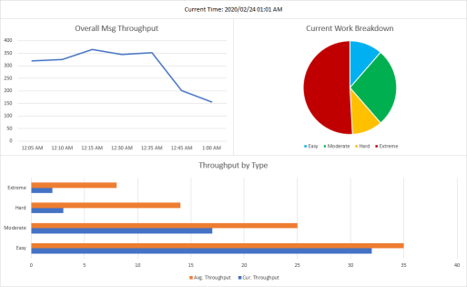

Project Technical Design Guidelines
It’s one thing for us to say that we need to be writing tests, implementing proper logging and monitoring, adhering to agile and DevOps, and so on. It’s another entirely to actually do those things, or more precisely, to do them for every project consistently. To help us be consistent and follow through on our goal of writing more resilient, long-lasting software, this document provides a set of guidelines.
These items are essential for new development, but they’re also important for non-trivial efforts against existing products. Any design submission that does not meet these guidelines will be rejected—though don’t let that discourage you. This is a cooperative process, and not a set of laws or rules.
The guidelines fall into these categories:
- Automated Testing
- CI and CD
- Monitoring
- Logging
- Patterns and Practice
- Infrastructure
- Documentation and Design
Not every project will be compatible with every guideline, and no set of guidelines can tell you how to optimally write software. It’s best to treat this as a sort of checklist you run through during the design phase of each project. To facilitate that, we’ll begin with a series of summaries you can check off as you validate them. More in-depth discussion about each point is linked on each list item.
Automated Testing - Summary
- Plan for testing from the very beginning (rule of thumb: 20% extra time)
- Design testable solutions and write testable code
- Fix “untestable” code, or denote why you can’t
- Test all public endpoints and critical paths
- Avoid tautological tests
- Avoid testing third-party or framework code, but test your integrations
- Shoot not for code coverage percentages but for 100% business coverage
- Test your code and infrastructure deployments
CI and CD - Summary
- Keep modules granular so they can be integrated as painlessly as possible
- Use feature flags where possible to release more frequently
- Create reproducible and deterministic builds
- Use CI process as a sign off on code quality and integration
- Create reproducible, deterministic, and idempotent deployments
- Ensure the entire pipeline takes less than 10 minutes to execute
Monitoring - Summary
- Measure all mathematically significant metrics
- Abstract as much monitoring logic out of your application as possible
- Take full advantage of time series data
- Establish and maintain SLAs on throughput and performance
- Alert meaningfully
- Create dashboards and stoplights to help identify problems before they become a problem
Logging - Summary
- Log (almost) everything
- Put as little logging code within your application as possible
- Provide enough information in logs for them to be immediately actionable
- Rely on log levels, but ensure they’re meaningful
- Carefully craft logs to be eminently searchable
- Remember that logs are not metrics, and metrics are not logs
Patterns and Practice - Summary
- Apply SOLID principles, but don’t be dogmatic
- Be monolithic when you need to be; be modular when it matters
- Consume services responsibly; provide responsible services
- Be creative where needed and formulaic to save time
- YAGNI
- Get WET before you worry about being DRY
- Expose configuration externally to minimize the need for recompilation and redeployment
- Avoid technical debt, and plan immediately to pay any you accrue off
Infrastructure - Summary
- Express infrastructure requirements as code
- Make your application highly available, load balanced, fault tolerant, and scalable
- Consume resources responsibly
- Store secrets securely
- Have a back-out strategy for bad/failed deployments
- Plan for emergency deployment of critical services—or document the lack of plan/capability
Documentation and Design - Summary
- Create a design document that demonstrates how requirements will be satisfied
- Address many of the same concerns as this document in your design doc
- Record the intangibles for future reference to avoid tribal knowledge
- Keep design, requirements, and other project docs centralized and grouped together
- Treat API documentation as a first-class deliverable
- Write self-documenting code
- Automate doc creation and publishing
—
Automated Testing
Automated testing is vital to the long-term success of any engineering effort, but it’s especially critical for applications following an agile/DevOps methodology. Tests are how you help keep from breaking things when you move fast, and they increase confidence in deployments. The objective of releasing often isn’t necessarily to catch bugs more quickly; it’s to surface defects in general. Reducing the number of avoidable defects by eliminating easy bugs using automated testing means you can spend more time addressing the stuff that matters.
Plan for Testing
If you’re not planning for testing, you won’t write tests. This may sound obvious, but too many teams assume that testing is just part of development. Their estimates are usually inaccurate, and they spend time that otherwise could have been spent on tests just finishing the work instead.
A good rule of thumb is to add 20% extra time to estimates for testing (and testing alone). Go through your team’s usual methodology for estimation. Whether it’s hours, days, story points, or whatever—create your estimate as usual. Then, add 20% to that. This is not padding or fluff. This is the bare minimum time you can expect to spend on writing tests. If you expect that a task or project will require additional test-writing time, you are empowered to add more than just 20%.
| Avoid Influencing Estimates with Testing Time |
|---|
| Be careful not to start adding time for testing until you’ve settled on the estimate for the work. You want to avoid subconsciously influencing your estimate by the amount of testing time it would add. It is more important to estimate accurately and write good code (which means good tests) than it is to give management a lower number. |
Testable Designs and Testable Code
This document cannot teach you how to design testable solutions, nor how to write testable code. These topics alone are worthy of entire books. What it can do is help explain what makes a solution or module testable, and then encourage you to learn and ask questions.
Testable Design is Usually Modular Design
Past a certain point of trivial simplicity, monolithic designs tend to be harder to test.
- Even if every code unit that makes up the system is perfectly testable (a goal which, itself, is more challenging in monolithic designs), the system as a whole is often not.
- It’s only as good as the aggregate of its unit tests.
- Failures in a single module cause the entire system to be rejected, which drastically increases the impact of regressions.
- Monolithic code modules are, by definition, more complex. Complexity increases the likelihood of defects.
By contrast, modular designs tend to be simpler (per module), which reduces the likelihood of defects. They also isolate impacts to single modules, meaning other fixes, features, and improvements are not held back by the one defective module.
“Modular” doesn’t have to mean microservices. Often it will, but modularity can be achieved through several mechanisms: packages, libraries, sidecar services, and more. So long as a given module can be written, deployed, referenced, and maintained independently of other modules, modularity has been achieved. Don’t take this to mean your modules can’t take dependencies. They can, so long as those dependencies are themselves modular. Modularity is a “turtles all the way down” sort of thing.
Testable Code is Always SOLID Code
It is possible at the system level to design something testable without relying on modularity, especially when the system is trivial or itself a module. However, when it comes to testing code units, there is less flexibility. Without following SOLID principles fairly closely, it is inevitable that the code will become test-resistant. It may occur immediately or it might degrade over years of maintenance, but it will happen.
Using a principled approach throughout the software’s lifecycle, even during maintenance mode, will help stave off technical debt, omniscient dependencies, and even entropy. Sometimes, an application may seem so trivial or straightforward that “going through the motions” isn’t worth it. But, it is, and to view these principles as rote practice is to miss the point (as we’ll discuss more later in this document).
It’s always significantly faster to do it right in the beginning than to come back and re-do it later. The nature of software is to grow and morph over time. Unless you’re 100% sure that you’re writing a dead-end application that will never evolve, be copy/pasted from, referred to by future developers, or be called upon to suddenly scale, it’s worth it.
Example of Testable vs. Test-resistant Code
We’ve talked a lot about what makes something testable, but how can you tell the difference? Here’s an example of the contrast between testable and test-resistant code. Don’t focus too much on the underlying language (C#) or patterns–those are only used to give context to the examples–just focus on how you’d write tests for this logic.
/* Test-resistant Example */
/*
Modules:
SalesReportWebsite
*/
// ------
// Sales.cs
// ------
// Assume SalesData is a POCO and that the referenced fields exist on it
public class Sales
{
public SalesData GetSalesData()
{
var sales = /* Pretend this does something, like query a database or read a file */;
return sales;
}
public decimal CalculateSalesFromOnline(SalesData sales)
{
return sales.Daily.Where(s => s.Source == "Online").Select(s => s.Dollars).Sum();
}
}
// ------
// SalesController.cs
// ------
// Pretend this is a really simple ASP.NET MVC Controller
public class SalesController : Controller
{
public SalesController() { }
public Sales SalesLogic { get; } = new Sales();
/* ...other methods/actions... */
public string ReportOnlineSales()
{
var sales = SalesLogic.GetSalesData();
var salesFromOnline = SalesLogic.CalculateSalesFromOnline(sales);
return $"Sales from Online sources were ${salesFromOnline}.";
}
}
/* Testable Example */
/*
Modules:
SalesContracts
AcmeSalesReports - depends on SalesContracts
SalesReportWebsite - depends on SalesContracts, AcmeSalesReports
*/
// ------
// ISalesQuery.cs - in SalesContracts.csproj
// ------
// Assume SalesData is a POCO
public interface ISalesQuery
{
SalesData GetSalesData();
}
// ------
// ISalesCalculator.cs - in SalesContracts.csproj
// ------
public interface ISalesCalculator
{
decimal CalculateSalesFromOnline(SalesData sales);
}
// ------
// SalesController.cs - in SalesReportWebsite.csproj
// ------
// Pretend this is a really simple ASP.NET MVC-style Controller
public class SalesController : Controller
{
public ISalesQuery SalesQuery { get; }
public ISalesCalculator SalesCalc { get; }
public SalesController(ISalesQuery salesQuery, ISalesCalculator salesCalc)
{
SalesQuery = salesQuery;
SalesCalc = salesCalc;
}
/* ...other methods/actions... */
public string ReportOnlineSales()
{
var sales = SalesQuery.GetSalesData();
var salesFromOnline = SalesCalc.CalculateSalesFromOnline(sales);
return $"Sales from Online sources were ${salesFromOnline}.";
}
}
// ------
// Startup.cs - in SalesReportWebsite.csproj
// ------
// Pretend this is an application of the ASP.NET Core startup pattern
public class Startup
{
/* ...ASP.NET Core boilerplate goes here... */
public void ConfigureServices(IServiceCollection services)
{
services.AddControllers();
// The prod implementations of ISalesQuery and ISalesCalculator live in AcmeSalesReports.
// However, they're not shown here because who cares?
// The point is that they could be anything that adheres to the interface contract.
services.AddTransient<ISalesQuery, SomeSalesQueryImplementation>();
services.AddSingleton<ISalesCalculator, SomeSalesCalculatorImplementation>();
}
}
The “testable” example is a very basic and imperfect implementation of dependency injection using the provider that comes with ASP.NET Core, but don’t worry about that. Instead, consider how you would write tests for one vs. the other given what’s shown here. In the first example:
- How would you write a test that doesn’t actually connect to the database?
- How would you test that the generated report is correct when the backing data is live and could change?
- How could you test the generated report without breaking that test the instant a customer wants the sales calculation to change slightly?
- How could you assert that the report is in the correct format without worrying about the correctness of the calculation, and vice versa?
In the second example, the answers to the above questions are trivial.
When to Write Tests During Development
Some engineers evangelize Test-driven Development (TDD), where tests are written before the logic. Others prefer to write tests after the fact. Both of these have flaws: TDD tends to promote over-modularized, trivial code with tautological tests, and testing after the fact often causes developers to miss obvious cases they may have otherwise remembered. Sometimes the best option is to write the test at the same time as you write the logic, but this requires greater discipline and isn’t compatible with everyone’s thought process.
Instead, get in the habit of considering what is best for you at each unit level. Applied this way, each developer can work optimally without needing to enforce a methodology. Some people work best when they write the test first, as it allows them to build a “skeleton” of the logic ahead of time that focuses on business rules. Others keep the testing in mind as they write a unit, and then hammer out the test quickly after. A few programmers switch back and forth between the unit and the test, adding things to each cooperatively.
The unit itself might dictate how tests are best written. Units with atomic outputs to assert or static algorithms to check are great candidates for test-first development. Units that require large amounts of input variation or conditional state manipulation often lend themselves well to side-by-side development with the tests. Units dealing with large schema-bound data objects or tight integrations with other services often come naturally to testing afterwards. The important part is to think about the unit before you begin writing it and decide at the time how best to write the test.
Where to Go from Here
If you’re not used to writing testable code, it will take some time to adjust. Do some reading on the SOLID principles and practice applying them in code. Remember to decide how you’re going to a test a unit before you even write it. Perhaps most importantly, if you’re unsure whether a design or unit is testable, ask someone! It’s usually easier to imagine the dependencies and side-effects of a method/design as someone that didn’t write it.
Fixing Untestable Code
Often, you’ll find yourself applying these guidelines to existing code instead of greenfield projects. When that happens, aside from the challenges of designing a solution, you’ve also got to deal with whatever decisions came before. That usually involves some level of technical debt. Older code–especially stuff written before these principles became commonplace–tends to have piles of technical debt or, sometimes, just poor design. Trying to write tests against this stuff can seem impossible.
However, there is no such thing as “untestable” code. What you’ve really got is test-resistant code. The difference might seem like an ideological exercise, but the important distinction is your mindset. You should be thinking about how to make the code more testable. Not all code can immediately be made testable, but that’s not a roadblock. What steps can you take right now? How can the code begin to evolve into a testable state?
To be clear, the correct answer is usually not to hack tests into test-resistant units. The objective is to either make the code more testable or to begin the initiative of making it more testable. Make a plan for how to get there and execute it. The value of good tests is too high to abandon them when the task seems daunting. Each and every developer is responsible for code quality and cleanliness, and each of us is empowered to design solutions.
Having said that, this set of guidelines can’t predict every scenario. It’s possible, if you’re time-limited and it’s truly hideous code, there isn’t enough time to even begin tackling the testability. Even in those cases, you should come up with a plan you (or someone) can pursue later, but what if you don’t even have time to plan? Regardless of the reason why, if you accept that you’re unable to write tests, you must document the reasons why. Store them with the documentation (both technical and project) so that in the future, when someone comes back to the code you wrote, you’ll save them some time having documented the issues you ran into.
Testing Public Endpoints and Critical Paths
When writing tests, the most important units to cover are those directly used to satisfy public endpoints (i.e. the API of your module). These are always business critical, by definition. This will intentionally lead you down a rabbit hole of testing, where you start asserting all of the conditions and dependencies that lead up to the endpoint.
A critical path is logic where your application spends the majority of its time; or, more precisely, the paths where optimization efforts are most valuable as they reduce the overall execution time for a given operation. Most of the time, following the above guidance, you will end up covering your critical paths by necessity. However, great care should still be taken to ensure they’re well tested. Optimizations are a frequent source of regressions, and being a critical path implies that regression would be highly detrimental.
Avoiding Tautological Tests
A tautological test is one where the test will always pass, usually because the unit and test are essentially equivalent. A rudimentary example in Python:
def sum(a, b):
return a + b
def myTest():
assert(sum(3, 4) == 3 + 4)
Notice that the test asserts sum(3, 4) by comparing it to 3 + 4. Technically, this test is validating that addition is performed correctly in the sum function. However, the condition is only checked by essentially replicating the unit being tested. Even if the test were improved it would still be tautological:
def sum(a, b):
return a + b
def myTest():
assert(sum(3, 4) == 7)
The test can never fail, although in this version it’s more because the test is asserting basic language functionality, which can be assumed to not fail. The nature of the sum unit is the problem rather than the test itself. Here’s an example of a non-tautological test that is similar:
def calculateGMROII(profit, avgInventoryCost):
return profit / avgInventoryCost
def myTest():
assert(calculateGMROII(100000, 25000) == 4)
This isn’t testing that Python is capable of dividing two numbers. It tests that the GMROII calculation behaves as expected. This is a business case which provides value, and a change in the algorithm for GMROII would likely impact downstream systems. Therefore, this is a useful, non-tautological test even though the calculation is relatively simple.
Where Tautology Gets Tricky
The examples above are trivial for the sake of demonstration. Most of the time, a test becomes tautological through less obvious means. Frequently, a test can appear perfectly valid until you “solve” it down like algebra. If the test solves down to (for example) 2x = x / 0.5, you’ve got a tautology. A more practical example:
WEEK = 201801
TESTDATA = [{'week': WEEK, 'value': 123}, {'week': WEEK, 'value': 456}, {'week': WEEK, 'value': 789}]
# This is the unit being tested
def dataSlicer(dataLoaderCallback, week, skip, take):
data = dataLoaderCallback()
dataAtWeek = [d for d in data if d['week'] == week]
return dataAtWeek[skip:skip+take]
def test_dataLoader():
return TESTDATA
def myTest():
sliceData = dataSlicer(test_dataLoader, WEEK, 2, 1)
assert(len(sliceData) == 1)
assert(sliceData[0] == {'week': WEEK, 'value': 789})
It is left as an exercise to the reader to determine why this one is tautological, but as a hint: simplify the test down until it becomes clearer.
Avoiding Redundant Tests Against Third-party or Framework Code
There is no value in writing a test against someone else’s code in your test suite. For example, if there is a math library you’re referencing, don’t bother writing tests against its pow() function. If you’re relying on an extension library to remove entities from an Entity Framework set, there’s no need to test that the entity was actually removed.
A module’s tests belong with the module. No tests in your suite should be written against other modules. If you find a test case for another module, for example a scenario that causes unexpected output, you should attempt to add it to that module’s suite. If that’s not possible, don’t worry about it. Write a test for your workaround instead, such that when the module updates and works correctly again, your workaround test will break.
Speaking of testing code integrations, while there’s no value in testing the third-party library, there is a ton of value in testing your units’ integration with those libraries. A great example is where your logic must transform the output from a third-party source in some way. Don’t bother testing that the third-party source returns the output as you expect; instead, test that your transformations behave as expected against all important possible outputs (including failures).
Business Coverage vs. Code Coverage
Many of the same shops that espouse TDD will enforce a 100% code coverage standard. In other words, all reachable code must be touched by a test in the suite. This dogmatic approach to testing leaves no room for interpretation or flexibility; often, builds will automatically be rejected if coverage falls below a certain percent. Speaking strictly about the dogmatism and zealotry, there is no value in code coverage-based testing standards. These shops are usually trying to substitute out high-quality engineers and smart people with rigid, rote practice, and it never* works. There is no substitute for good developers.
True value comes from looking at business coverage. Business coverage is just making sure that your suite has tests covering all of your business cases, asserting your business rules, and testing that your value-generating logic continues to work as intended. The test spec is created by strong requirements and clear, visible design. Coverage is ensured through due diligence during development and careful peer review focused not just on code quality, but on business value as well.
| Difference Between Code Coverage and Business Coverage |
|---|
| Code coverage only validates that the code units behave as expected. Business coverage is focused on ensuring that the application performs all business-valuable operations in the correct way. They frequently intersect but the mindset behind the two is very different. |
Calculating business coverage is not as easy as using a tool to spit out a percentage and automatically failing when it falls below a threshold, but it’s infinitely more useful as a signpost of quality. As a result of its subjectivity, there can never be a simple numeric representation. It will instead fall to discipline and practice, which is one of the reasons high-quality engineers are important. Code coverage enthusiasts assume that a 100%-covered solution will by definition ensure 100% business coverage, but this couldn’t be further from the truth. If it completely misses valuable business cases (because the units were not written to address them), it might as well be 0% covered.
* Even when people say it works, it’s probably not actually working. A team gets the results it incentivizes, so when it incentivizes code coverage, that’s precisely what developers focus on–to the detriment of code that does anything useful.
Testing Deployments
Just as important as unit-level and module-level testing is deployment-level testing. Testing a deployment means validating that the build/release pipeline is successful and adheres to infrastructure and architecture requirements. As discussed in the later section on CI/CD, the pipeline should be held to several standards. Deployment testing asserts those standards. For example, a deployment test for a service might validate that it deploys idempotently.
Unlike other testing granularities, deployment testing requires a suitable environment. Cloud-first applications enjoy an advantage here, as infrastructure can be trivially acquired temporarily to test a pipeline and then disposed after the test. Thanks to products like Kubernetes, however, even private cloud applications can acquire and dispose of infrastructure programmatically.
Test results are usually binary: absolute success or complete failure. Deployment tests, however, can sometimes fail due to transient errors inherent to Infrastructure-as-a-Service (IaaS) platforms. Whether it’s Azure, Google, or vSphere, sometimes the infrastructure just cannot be created for unknown, unimportant, and temporary reasons. Because of this, it is not recommended to automate the testing of deployments. It should be scripted, but the success of a pipeline should never rely on the outcome of a deployment test.
You may be asking, “if the test shouldn’t be automated, when should it be run?” Deployment testing should be conducted before the module is promoted into a production branch (i.e. master). Usually, infrastructure deployments into production are gated by a DevOps engineer anyway; it falls to them to execute the provided deployment tests. If the test does not pass, the DevOps engineer will not allow the module to pass. Thankfully, DevOps engineers should be the most knowledgeable source of information about how to write a deployment test, so cooperate with them to fix your infrastructure and/or write a valid test.
CI and CD
The principles of Continuous Integration (CI) and Continuous Delivery (CD) are vital to getting the maximum value out of our projects. Developers are often unable to accomplish work as fast as possible due to roadblocks or speed bumps in the release process. CI/CD are a central part of every flavor of agile methodology because they remove roadblocks and speed bumps; developers are enabled to move quickly and deploy often. In fact, some teams/projects will even choose to use Continuous Deployment to ensure their latest code is always released when it’s available.
For reference, here are some quick definitions:
- Continuous Integration: the practice of automatically validating that new commits from many authors integrate properly with the existing code base. In other words, CI is making sure that failures or flaws were not introduced when all commits have merged together. Often, it implies frequent merges to minimize the impact of drifting changes between branches over time.
- Continuous Delivery: the practice of being able to release changes as quickly as possible. Usually, this entails having an up-to-date release artifact ready to go live at all times. While not necessary, it’s considered healthy to release as frequently as possible; this reduces the “blast radius” of the changeset.
- Continuous Deployment: a corollary to CD, this is the practice of taking the up-to-date release artifact generated by the CD process and automatically releasing it as soon as it’s generated successfully.
- There is some debate over whether the automatic release must be into production. For the purposes of this document, assume that it must at least deploy into a production staging environment which can trivially become production.
Granular Modules Integrate Easily
This is a deceptively simple concept: more granular modules are easier to integrate. That statement has a dual meaning; it refers both to code integration and system integration. Module-level integration testing runs faster and, thanks to lower complexity, proves more decisive. System-level integration (i.e. deploying the module into a running environment) has a lower impact risk if the module is small. Tend toward more granular modules, where possible, to amplify these advantages—though obviously balance it against the increase in system complexity.
Feature Flags
A common (and healthy) practice in CD is to release changesets as frequently as possible. As mentioned above, this reduces the possible impact of any single changeset. Another benefit, however, is the ability to get features into production to harden ASAP. As the saying goes, no plan survives contact with the enemy, so why not get the plan in front of them as soon as possible?
Of course, not every infant feature is ready to be seen by users immediately. Even if there would be a ton of value in having developers test the feature in the production environment, users have a habit of forming an impression the first time they see a feature whether it’s “ready” or not. This is where feature flags come into play. They can allow you to toggle features in real-time, gate features by user (or other logic), and expose functionality internally without making it visible to the public, among other things. You get this while also getting to integrate and test the feature where it matters: in production.
The implementation of feature flags is outside the scope of this document (though here is a decent reference for more information). Getting into the habit of using them and releasing features earlier will usually result in stronger features, better testing, and smoother user acceptance. This is especially true if you’re able to run pilot programs or A/B testing with your feature flags.
Reproducible and Deterministic Builds
In order to reduce time-consuming troubleshooting on build/deploy pipeline issues, avoid unpredictable application regressions, and create higher confidence in releases, you should strive for all builds to be reproducible and deterministic.
A reproducible build means that the set of conditions (operating environment, variables, code state, etc.) required to build a product can be replicated on demand, for any (reasonable) past or current version of the product.
An example of a build that is not reproducible is one that relies on being built on machines that, externally to the pipeline, have been prepared with prerequisites. For example, if the pipeline does not install the .NET Core 3 SDK, but your build requires it, it is not reproducible. Perhaps a more volatile example: if the build relies on resources that could become permanently unavailable (say, downloading a library from someone’s personal website), it is not reproducible.
A deterministic build is one where, given that set of reproducible conditions, the build output will be the same every time. Creating a deterministic build can sometimes be tricky. Many modern package managers or similar concepts, like Docker image repositories, allow you to take dependencies not on exact versions but instead on minor, major, or even latest versions. Doing this causes your build to become non-deterministic. Some build pipelines take dependencies on time-sensitive or context-sensitive variables; these are non-deterministic as well.
| Important |
|---|
| Most package managers support some form of lock file or similar mechanism that ensures your packages and all their dependences resolve to deterministic versions. You must take advantage of this mechanism. Too often, a package you depend on will take a loose dependency on another package. Since that indirect package could change without you changing anything in your direct dependencies, your build is no longer reproducible or deterministic. Locking the chain of dependencies resolves the issue as much as can reasonably be expected. |
Using Continuous Integration as a Quality Measure
The more trust you can place into your CI process’s ability to vet your changes, the more trust you can have in deploying. CI/CD is built on enhancing trust to the point of having faith a given deployment will succeed. Defects and regressions will always happen—no process can catch them all—but having confidence that the automated pipelines will take care of the obvious stuff removes a lot of anxiety.
This is why your CI pipelines run the automated test suites for your projects, why you merge early and often, and why you perform CI at all. It helps increase confidence in the artifacts being generated and the work being done. You should make sure your CI process is doing everything (within reason) to assert the quality of your code, changes, and artifacts.
Reproducible, Deterministic, Idempotent Deployments
Much like your builds, your deployments should be reproducible and deterministic. For the most part, you can reference the section on builds and apply the same principles here. There are some differences, which this section will focus on.
A reproducible deployment differs from a reproducible build only in that the environment you’re reproducing is different. Rather than making sure the build occurs in the same environment, here you’re ensuring that the infrastructure itself is reproducible. A deployment should be able to create its necessary infrastructure, dependencies, and so on. For example, if your application depends on its own RabbitMQ instance, your deployment must be able to reproduce that.
A reproducible deployment leads into making a deterministic deployment. Assuming deterministic build artifacts, the resulting deployment should be the same every time. This means that deploying your artifact fresh to the platform should result in the exact same code, infrastructure, backing services/dependencies, networking, and so on, every time.
Idempotency here means that, after the first time, deploying the same artifacts again will change nothing. The existing deployment will be unaffected. Without tools that help enforce idempotency (like Kubernetes and its declarative YAML format), it can be difficult to achieve it for your pipelines.
Idempotency extends further to the individual components of each deployment. For example, imagine you have executed a deployment pipeline which creates a RabbitMQ instance, two services, and one load balancer in Kubernetes. Then, a minor code change to one service causes a new artifact to be created. When you execute the pipeline with this new artifact, only the changed service should be affected. If you end up with two RabbitMQ instances, four services, and two load balancers… that’s a problem.
Faster Pipelines Equals More Productivity
It probably goes without saying, but if your pipelines are fast, you can respond more quickly to issues. No matter how much testing we automate, how often we test deployments, or how diligent our developers are in peer review, sometimes stuff slips through the cracks. Imagine a build/release pipeline that takes 45 minutes to run. Any error, even something so trivial you can correct it in literally one second, requires a minimum of 45 minutes to fix. Imagine how long it takes when it’s something serious or you need to release multiple times.
As a rule of thumb, keep CI/CD pipelines under 10 minutes of execution time. It’s fine if they run longer when releasing to an empty environment (i.e. releasing for the first time), but given that the components should be idempotent, later executions should be much quicker.
Monitoring
Without being able to measure what’s going on in a system, you’re stuck taking shots in the dark when issues crop up. Even worse, you only know issues are happening once they’ve already caused some kind of impact. In complex systems, it can take tens of minutes–sometimes hours–to find which subsystem is even having the issue before you can start debugging. It’s especially nasty when the issue isn’t a wholesale failure, but a transient error, throughput issue, performance problem, or similar functional-but-bad state.
Good monitoring is the key to solving the visibility issues that many teams face in production systems.
Measure all Mathematically Significant Metrics
When in doubt, it’s better to over-measure than to under-measure. You should record every metric your application deals in. Whether it’s CPU usages, memory used/free, number of threads, time required, message throughputs, number of files processed in the current operation, or even network utilization, you should be recording it one way or another.
| Mathematically Significant? |
|---|
| A mathematically significant metric is a number that has meaning in comparison or contrast to other numbers, and whose value scales by some mathematical function with variables in the developer’s control. Usually, these are obvious metrics: number of operations per second, CPU usage, count of I/O waits, and so on. The distinction is made to contrast these metrics against “soft” measurements like, for example, a user satisfaction rating. A user satisfaction rating is something that can be measured, but only using an arbitrary scale and without the ability to directly affect the outcomes. |
The objective of recording all these metrics is to be able to draw conclusions about the state and performance of the system, both the system as a whole and its subsystems. We need these insights both real-time and historically. Imagine a dashboard showing a line graph of your application’s message throughput next to a pie chart of the breakdowns of the types of work sitting in the queue. Beside that is a bar chart showing current throughput per type vs. average throughput per type at this time. You’d be able to quickly pinpoint potential issues in an instant, rather than having to identify that a problem exists and then run a bunch of queries or aggregate a bunch of logs to gather the metrics yourself.

Obviously, not every metric in that imaginary dashboard must necessarily come from your application, but for it to exist, all applications must be dutifully reporting metrics. When deciding what to measure, there are some bare minimum metrics that every application should be recording, shown here along with some examples.
- Utilizations
- CPU, RAM, disk, network, files, threads, processes, etc.
- Throughputs
- Number of messages processed, number of operations performed, number of service calls made, number of records read, etc.
- Workloads
- Number of messages waiting, number of files yet to process, count of jobs currently running, etc.
- Times
- Time required to complete an operation, time elapsed between heartbeats, time spent on reading files, time spent on waiting for a database, time spent waiting on network communication, uptime, etc.
Recording a metric, as discussed below in the Abstract Metric Collection section, should be trivial to your application in terms of resource cost and logic required. Some of these minimum metrics are taken care of for you automatically, depending on the application platform. For example, Kubernetes takes care of measuring most of your application’s resource utilizations in that environment (but not necessarily all). If your application uses RabbitMQ as a message broker, it can be configured to report metrics automatically as well.
| Value in Non-Mathematical Metrics |
|---|
| Despite the focus in this section on mathematically significant metrics, there can certainly be value in other metrics which aren’t as “hard”. However, those metrics should be measured outside the scope of your project’s system monitoring effort. Their collection might, for example, be part of the application’s business requirements rather than a system-level architectural necessity. |
It’s important that you consider your monitoring carefully even when various platforms provide assistance. This guidance takes care not to prescribe any particular solutions because only you, the developer, know best what’s appropriate for your project. Only you can know which metrics you should record that might not be provided by your infrastructure.
Abstracting Metric Collection and Dispatch
It may seem a little counter-intuitive to recommend measuring everything, then immediately say your application should do as little measuring as possible. The key phrase, however, is your application. This means that every effort should be made to collect metrics about the application outside of the app’s logic.
If the logic must expose a metric (for example, because the data can only be recorded by the logic), it should do so plainly, in a way that does not take dependencies on specific mechanisms, infrastructures, or frameworks. Another process, such as a Kubernetes sidecar or metric collection agent like Telegraf, should be responsible for the collection and dispatch of those metrics.
Separating the collection and delivery of metrics from the recording allows the application to remain naïve and operate in many different environments without needing to change. The underlying dispatch of metrics can change live without impacting anything. The recording of metrics won’t potentially have repercussions throughout the application if something fails; the collector can simply pick up and resume when it recovers.
Taking Full Advantage of Time Series Data
An amazing way to create measurable metrics is to record state artifacts at a time interval. Viewing the various state details of an application over time–for example, sampling and recording the number of items in queue every second–can expose tons of insight into the behavior of the system.
Assuming you’ve properly abstracted your metric collection, you should be able to trivially record details at a fairly quick interval without causing harm to the system. You want to be able to extrapolate meaning from the data both in realtime and historically simply by aggregating/partitioning the data differently.
Let’s look at CPU utilization on a Windows workstation as an example. Viewing it realtime in Task Manager tells you how loaded the CPU is right now and what impacts to expect in the near term. Viewing it over the past 24 hours in Resource Monitor informs you on what your busiest hours are, which helps you plan your future days better. In both cases, the CPU usage is sampled at an interval and recorded; the only difference is the zoom level and aggregation of the samples.
Establishing and Maintaining SLAs on Metrics
The biggest goal of the monitoring effort, aside from system visibility, is the ability to define and assert success for a system. Being able to look meaningfully at the monitoring and alerts for a system and say, definitively, “the system is operating successfully,” has immeasurable value. It can:
- Increase confidence around the product/system
- Reduce stress on the team and business
- Quickly locate where problems actually lie and fix them directly
- Alleviate conflation between different definitions of success
| Note |
|---|
| To clarify the different definitions of success used here: a product’s success can almost never be 100% determined by how well it satisifed its SLAs and how good its metrics look. A system’s success can be shown much more mathematically. |
Defining success requires the creation of SLAs. The Distributed Architecture Strategy document goes into much greater detail about the creation and maintenance of SLAs. It is strongly recommended to read that entire document, but especially the section on SLAs and metrics. The SLAs you create for your system are not necessarily user-facing SLAs. Those are usually driven more by the business and sales pipelines, though they often strongly influence your internal SLAs.
SLAs can only be created and enforced around good metrics. Even the most basic SLA in the world, uptime percent, can’t be upheld without metrics around service uptimes. Since raw uptime isn’t really valuable–if one replica out of 100 is up, the service is technically still “up”–you need to define an uptime of scale instead. Establishing an uptime of scale necessitates defining what scale means for your system. By the time you’ve followed this thought process through, you’ll have determined several metrics to record and items to monitor.
Alerting Meaningfully
Most systems alert too much. Developers and operators often err on the side of caution and choose fairly low thresholds to alert on, which leads to an overabundance of noisy alerts that may or may not actually represent a problem. Consumers begin to ignore the alerts, meaning that actual, valuable signals get lost in the ether. This isn’t a theoretical problem; it’s one that has proven itself historically. You’ve seen it or heard of it: e-mail alerts getting automatically shuffled by Outlook rules into folders full of thousands and thousands of unread signals, most of which have less-than-zero value.
Make no mistake, however. Those alerts which really do have meaning are astoundingly valuable. This becomes especially true as the complexities of systems, architectures, and ecosystems increase. Being able to get meaningful signals from the various parts of a distributed application (or even a monolithic one) is vital to keeping systems healthy. In turn, this keeps the customers happy.
| Important |
|---|
| This section is primarily discussing infrastructure-, system-, and architecture-level alerts. As covered in the System-Level Alerts vs. Business-Level Alerts sub-section, there is a strong distinction between alerts that are a byproduct of your application vs. those that are part of your application’s business logic. |
Tips for Alerting
Distinguishing what makes an alert a useful and meaningful signal can sometimes be tricky, but here are a few tips:
- An alert must be actionable.
- If you aren’t sure whether something qualifies for alerting, ask someone else what they would do if they received the alert.
- Since alerts should be actionable, if they can’t tell you what they would do to address the alert, it might not be a valuable alert.
- As a rule of thumb, when a system has crossed into its yellow or red states (see Dashboards and Stoplights), a signal should be raised.
- However, there must be a “cooldown” on this signal to prevent it from over-alerting when the system rapidly cycles between states.
- Alerts should usually be based on metrics.
- Specifically, a good signal is when an important metric is deviating significantly from its steady state.
- Example: a queue-based message processing application has items in the queue, but its throughput is 0 over the most recent window of time.
- Alerts should contain the right information needed to convey the impact.
- In other words, you should strive to make the alert self-explanatory, without needing to dig in further to understand the problem. Some examples:
Spline reticulator reticulated 100 splines- This is only a useful alert if you happen to know that 100 is too many splines.
Spline reticulator reticulated 100 splines which exceeds the threshold of 25.- This is better. It indicates:
- The reticulation exceeded a threshold, which is why there was an alert.
- The magnitude of the excess was 100 vs. 25–a potential indicator of severity or urgency.
- This is better. It indicates:
Spline reticulator reticulated 100 splines which exceeds the threshold of 25. This often indicates that the foo map is too complex or that the bar graph has too many baz nodes.- This is even better. However, this much insight won’t always be achievable or even desirable depending on the source of the alerts.
- Just as important as the metric information is some ability to correlate the alert to the system(s) it’s based on.
- Ensure alerts are making it to the right people without that list going stale.
- An alert could be perfect, concise, and informative, but if it doesn’t end up in the right places, it might as well not exist.
- This often means making sure alerts are going to places abstracted from individual people. For example, alerting into a team-wide or division-wide Slack channel or emailing alerts to a distribution group that represents the concerned parties helps ensure that the right people see them no matter who may come and go within the company.
- Don’t be afraid to lean on alerting frameworks for help.
- Getting the right quantity and quality from your alerts can be tough. These are solved problems; there’s no reason to bang your head against the wall.
- Grafana, for example, has a decent alerting rules engine built-in which is able to directly pull metrics from time-series databases like InfluxDB.
Application Logic Should (Almost) Never Alert
Application logic should almost never create a system-level alert directly. Only in very rare scenarios should it even be able to do so. Your code should be handling errors gracefully (remember Postel’s Law), so the sort of explosions that you would need to signal should be infrastructural–things that the application platform would alert on instead. The responsibility of observing the system for critical states lies outside of your application, for the most part.
If an error is so severe that it cannot be handled, it’s usually best to just crash. For the same reasons that your application should be recording metrics plainly, so too should it be failing plainly. The application platform and DevOps ecosystem must be robust enough to create the alerts around frequent application crashes–after all, you can’t predict every reason your app might go down.
Let’s look at a practical scenario. Pretend your application is a report runner; its purpose is to receive messages to run reports, run the reports, and write the output to a storage location. As an example, the app might crash if it hits a defined retry limit on trying to access its critical storage for the results. The application cannot continue when it’s unable to write the results of its operations. In this example, crashing may even fix the error, depending on the application platform and storage medium. Transient errors or temporary mount disruptions can sometimes be corrected with an application restart.
That said, there are rare exceptions where your application may need to alert directly. Use your best judgement, given the guidance of this document and your team. Most of the time, if you feel like your application must alert, it’s because the alerts fall into the category discussed in the next sub-section.
System-Level Alerts vs. Business-Level Alerts
Most of the discussion in this section has been around metric-based, system-level alerting. Part of the reason your application shouldn’t be doing its own alerting is the implication that it must therefore be concerning itself with consuming its own metrics and/or taking a dependency on an alerting mechanism. This goes against the guidance in the Abstracting Metric Collection section.
However, there is a type of alerting that doesn’t fit the same mold: business-level alerting. Unlike the infrastructure-level signals this section has focused on so far, business-level alerts are driven by business rules and requirements. These alerts are not a byproduct of your application, they are your application. You must be very careful to distinguish these alert types, because they are very different use cases.
As an example, pretend your application is part of an ETL platform. Another application has extracted the data; yours is responsible for asserting the completeness of that data–as in, whether the source system provided all of the necessary data, based on a business definition of completeness. When your application sends an alert that the data is likely not complete, that alert is the output of your application. It is not the same kind of alerting as, say, signaling that the application is using 100% of its allocated RAM. The audience is different, the delivery mechanism is probably different, and the content is different. These are very likely two separate systems, serving two separate purposes.
Business-level alerts are fine, so long as they fall within the requirements and design of the application. Many of the same tips in this section could probably apply to them (e.g. they should be actionable, based on metrics, etc.) but there is much more room for flexibility here. Whatever is determined to provide value to the user is exactly how much alerting your application logic should do when it’s business-level alerting.
Dashboards and Stoplights
| Important |
|---|
| Please read the Distributed Architecture Strategy section on Stoplights before proceeding! |
During the design of any system, one of the first-class items should be a well-defined collection of dashboards designed to assist support and maintenance out of the gate. Using the dashboards, one should be able to answer many questions about the operation of the system and quickly, proactively diagnose issues.
Similarly, the collection of metrics and states that will define your steady state must be defined during the design effort. These SLO’s will help you define your stoplights.
- What conditions must be met for it to qualify as green?
- What conditions cause it to be in a red state?
- (For guidance to others) what does a yellow state usually mean about the system?
This at-a-glance discoverability has incalculable value, and cannot be anything less than a primary concern of every effort. It’s far too easy to put dashboards and stoplights aside when the project is on a time crunch or trying to run with a thin crew, believing that the system will run fine without them. Perhaps it will, for a bit, but any production system that’s intended to last will eventually go down. Every minute that system is down, it’s costing you (either directly in revenue, or indirectly in damage to customer and stakeholder trust), and you’ll wish you had all the tools available to correct the problem ASAP.
Logging
Keeping clean, informative logs is one of the most important things developers can do to make a system more maintainable. However, it is perhaps one of the most challenging things to get “right”, second only to recording metrics. Too many logs (or too verbose) just leads to unreadable noise. Too few (or too sparse) and there are gaps in information and history that prevent issues from being traced. This section should help define a sweet spot of useful logs that become a reliable source of troubleshooting and auditing assistance.
Log (Almost) Everything
…
Minimize Application Logging Code
…
Actionable Log Data
…
Meaningful Log Levels
Most logging libraries support a concept of log levels—such as trace, debug, info, warning, and error; or sometimes represented as numbers—to help categorize and often thin out the amount of logs being written or consumed at a given time. Given that you should log almost everything, having a somewhat-standard way to denote the intention and importance of a log message is very useful. Otherwise, the number of logs can become overwhelming.
It is strongly recommended that you rely upon log levels in your logging implementation. However, unless the levels have well-established meaning, their intended use of reducing the amount of work one must do while spelunking through the logs is eliminated.
Here are a few guidelines for making log levels meaningful in your application:
- Make sure the log level of your application is configurable.
- Most of the time, the lowest levels of your logging are very verbose. The
traceanddebuglevels, for example, often spit out several messages for every relatedinfoevent. - That highly granular detail is not usually necessary for a system running in production. It’s wise to make the log level configurable such that the verbose logs are not written unless the application is specially configured to output them.
- Often, dev and QA environments will leave the verbose logging on. Production environments might turn it on occasionally if detailed troubleshooting is required.
- Most of the time, the lowest levels of your logging are very verbose. The
- In the documentation, establish what types of events and messages should fall into which levels.
- The primary cause of meaningless log levels is when developers don’t understand what each level should be used for, so information ends up poorly categorized.
- As a default, use this:
traceis used for very fine-grained debugging information that often goes as deep as emitting a log when a method is called or even when specific lines of code are about to be executed. Obviously not every method or every line of code should log to thetracelog, but important or impactful ones can be.- Ex:
"parseJsonForMessage() called"
- Ex:
debugoften represents critical state changes, important logical entry points or exit points, or data dumps that might be useful for debugging later.- Ex:
"Begin parsing JSON for message 1234"
- Ex:
infois usually the lowest active logging level by default, and represents audit information, events and messages of interest, and other messages that help viewers understand standard process flow.- Ex:
"Received message 1234"
- Ex:
warningis for events or messages that are slightly problematic or potentially concerning, but not immediately erroneous. However, as they often indicate future errors, they are quite important.erroris straightforward: it denotes errors. An error may not necessarily be fatal (though it’s very useful to make fatal ones obvious), but any time an erroneous state is encountered it should be logged.- Non-fatal errors in user input/state and warnings often overlap in concern. It can be helpful to treat non-fatal user issues as warnings to help system-level errors stand out.
- Ex:
"Message 1234 was larger than the maximium size of 1024 KB and could not be processed."
- Ensure that whatever method is used for digging through log files makes the log level visible and searchable—whether it’s something as simple as flat text files or as complex as Splunk.
- For example, flat text logs should include the log level in the message so that advanced text editors like VS Code, Sublime Text, or Notepad++ can highlight and find it within the log.
- Ex:
2020-12-08T16:56:35.9319564-06:00 Info: Received message 1234 - Ex:
2020-12-08T16:56:35.9319564-06:00 Error: Message 1234 was larger than the maximum size of 1024 KB and could not be processed."
- Ex:
- For example, flat text logs should include the log level in the message so that advanced text editors like VS Code, Sublime Text, or Notepad++ can highlight and find it within the log.
- Obviously, be consistent with how log levels are treated and what sorts of messages fall into which levels.
Searchable Logs
…
Logs Are Not Metrics, Metrics Are Not Logs
…
Patterns and Practice
- Apply SOLID principles, but don’t be dogmatic
- Be monolithic when you need to be; be modular when it matters
- Consume services responsibly; provide responsible services
- Be creative where needed and formulaic to save time
- YAGNI
- Get WET before you worry about being DRY
- Expose configuration externally to minimize the need for recompilation and redeployment
- Avoid technical debt, and plan immediately to pay any you accrue off
Infrastructure
- Express infrastructure requirements as code
- Make your application highly available, load balanced, fault tolerant, and scalable
- Consume resources responsibly
- Store secrets securely
- Have a back-out strategy for bad/failed deployments
- Plan for emergency deployment of critical services—or document the lack of plan/capability
Documentation and Design
- Create a design document that demonstrates how requirements will be satisfied
- Address many of the same concerns as this document in your design doc
- Record the intangibles for future reference to avoid tribal knowledge
- Keep design, requirements, and other project docs centralized and grouped together
- Treat API documentation as a first-class deliverable
- Write self-documenting code
- Automate doc creation and publishing